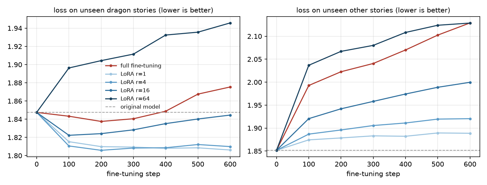

练习 04：LoRA 微调
把练习 01 的小模型改造成爱讲龙的故事的模型：一种做法改动全部 1200 万个参数，另一种只训练 4 万个。比一比两者学到多少、忘掉多少、要存多大的文件，以及学习率怎样左右结果
一、要做的是什么
练习 01 的模型是在各种儿童故事上训练的，是个"通才"。假如我们想要一个专门讲龙的故事的模型，最直接的办法是拿一批龙的故事接着训练它，这叫微调。微调时，模型的参数会从"通才"的状态出发，往"龙故事专家"的方向调。
问题在于，普通的微调（全量微调）会改动模型的每一个参数。我们这个模型只有 1200 万参数，无所谓；但一个 700 亿参数的模型，每微调一个用途，就要多存一份 700 亿参数的副本，训练时还要为每个参数存梯度和优化器状态，需要的显存是模型本身的好几倍。
LoRA（Low-Rank Adaptation，低秩适配，Hu 等 2021）的办法是：原来的参数全部冻住不动，在每个权重矩阵旁边加两个很小的矩阵，只训练这两个小矩阵。这一篇要回答三个问题：
- 只训练这么少的参数，模型能学会讲龙的故事吗？
- 微调会不会让模型忘掉原来的本事（讲普通故事）？LoRA 和全量微调谁忘得多？
- 省了多少：要训练多少参数，存多大的文件？
二、LoRA 是怎样做的
模型里的线性层做的事是 $y = Wx$：输入向量 $x$ 乘以权重矩阵 $W$。比如注意力里的 $W_q$ 是 384×384，有 147,456 个数。微调相当于把 $W$ 改成 $W + \Delta W$，全量微调就是让 $\Delta W$ 的 147,456 个数都自由变化。
LoRA 规定 $\Delta W$ 必须是两个细长矩阵的乘积：$\Delta W = BA$，其中 $A$ 是 $r \times 384$，$B$ 是 $384 \times r$，$r$ 叫秩，是一个很小的数，比如 4。这样 $\Delta W$ 虽然还是 384×384，但它只由 $384 \times 4 + 4 \times 384 = 3072$ 个数决定，是原来的 2%。
直观地说，$A$ 把 384 维的输入压缩成 4 个数，$B$ 再把这 4 个数展开回 384 维。所以 $\Delta W$ 只能在 4 个"方向"上改动模型的行为。这为什么够用？Aghajanyan 等（2020）发现，微调时权重的变化本身就集中在很少几个方向上（CS224N 第八讲称之为"内在秩很低"）：让一个会讲故事的模型多讲龙，不需要重新学语言，只需要在少数几个方向上推一推。
两个细节：
- $B$ 初始化为全 0，所以刚加上 LoRA 时 $BA = 0$，模型和原来一模一样，微调从原模型出发。$A$ 用小的随机数初始化。
- 输出要乘一个缩放系数 $\alpha / r$，这里取 $\alpha = 2r$，即系数固定为 2。
class LoRALinear(nn.Module):
"""output = W x + (alpha / r) * B (A x). W is frozen; A is r x in_features, B is out_features x r."""
def __init__(self, base: nn.Linear, r: int, alpha: float):
super().__init__()
self.base = base
self.base.weight.requires_grad = False # freeze the original weight
self.scale = alpha / r
self.A = nn.Parameter(torch.randn(r, base.in_features) / base.in_features ** 0.5)
self.B = nn.Parameter(torch.zeros(base.out_features, r)) # B starts at 0, so the model is unchanged at first
def forward(self, x):
return self.base(x) + self.scale * (x @ self.A.T) @ self.B.T
def merged_weight(self):
"""After training, B A can be added into W, so inference is as fast as a plain linear layer."""
return self.base.weight + self.scale * self.B @ self.A然后把模型每个 Transformer 块里的 7 个线性层（注意力的 q、k、v、o，前馈层的 w1、w2、w3）都换成 LoRA 版本，其他所有参数（词嵌入、归一化层）冻结：
def apply_lora(model, r, alpha=None):
"""Replace the 7 linear layers in every Transformer block (attention q, k, v, o; feed-forward w1, w2, w3)
with LoRA versions, and freeze every other parameter (embedding, norms)."""
alpha = alpha if alpha is not None else 2 * r
for p in model.parameters():
p.requires_grad = False
for block in model.blocks:
for parent, names in [(block.attn, ["wq", "wk", "wv", "wo"]), (block.ffn, ["w1", "w2", "w3"])]:
for n in names:
setattr(parent, n, LoRALinear(getattr(parent, n), r, alpha))
return model检查：加上 LoRA 后，要训练多少参数？输出变了没有？（check.py 的输出）
parameters in the original model: 12,194,688
one 384x384 attention matrix W: 147,456 numbers
r=1 A and B next to one 384x384 matrix: 768 numbers; trainable in the whole model: 43,776 (0.36% of the original); output unchanged after adding LoRA: True
r=4 A and B next to one 384x384 matrix: 3,072 numbers; trainable in the whole model: 175,104 (1.44% of the original); output unchanged after adding LoRA: True
r=16 A and B next to one 384x384 matrix: 12,288 numbers; trainable in the whole model: 700,416 (5.74% of the original); output unchanged after adding LoRA: True
r=64 A and B next to one 384x384 matrix: 49,152 numbers; trainable in the whole model: 2,801,664 (22.97% of the original); output unchanged after adding LoRA: Truer = 1 时只训练 43,776 个参数，是原模型的 0.36%；r = 64 时是 23%。四种秩加上 LoRA 后，输出都和原模型完全一样，说明 $B = 0$ 的初始化起了作用。
三、实验怎样设计
- 微调数据：练习 01 用过的那 53 万篇训练故事里，所有提到 dragon 的，共 4166 篇、约 125 万个 token。原模型训练时其实也见过这些故事，只是它们只占不到 1%。
- 评估"学会了没有"：验证集里提到龙的 160 篇故事（训练时没见过），看模型在上面的损失。损失越低，说明模型越能预测龙的故事里的下一个词。
- 评估"忘掉了没有"：验证集里不提龙的普通故事，看模型在上面的损失有没有变差。
- 看行为：让模型以"Once upon a time"开头写 40 个故事，数有几个提到了龙。
- 每种做法都训练 600 步，每步 16 段、每段 256 个 token，一共约 246 万个 token，相当于把龙的故事过两遍。全量微调用学习率 3e-4，LoRA 都用 2e-3（LoRA 通常需要比全量微调大得多的学习率，后面第五节会专门看学习率的影响）。
runs = [("full fine-tuning", None, 3e-4), ("LoRA r=1", 1, 2e-3), ("LoRA r=4", 4, 2e-3), ("LoRA r=16", 16, 2e-3), ("LoRA r=64", 64, 2e-3)]
for name, r, lr in runs:
torch.manual_seed(0)
model = fresh()
if r is not None:
apply_lora(model, r).to(dev) # the new A and B matrices must be moved to the GPU too
params = [p for p in model.parameters() if p.requires_grad]
n_train = sum(p.numel() for p in params)
opt = torch.optim.AdamW(params, lr=lr, weight_decay=0.0)
g = torch.Generator().manual_seed(1); t0 = time.time(); curve = []
for step in range(STEPS + 1):
if step % 100 == 0:
curve.append([step, evaluate(model, dragon_val), evaluate(model, general_val)])
print(f" {name} step {step:3d} dragon-story loss {curve[-1][1]:.3f} other-story loss {curve[-1][2]:.3f}", flush=True)
if step == STEPS: break
_, loss = model(*batch(dragon_train, g))
opt.zero_grad(); loss.backward(); opt.step()四、结果
finetune.py 的输出（dragon-story loss 是没见过的龙故事上的损失，other-story loss 是普通故事上的损失，mentions a dragon 是 40 个故事里提到龙的比例）：
fine-tuning data: 1,246,091 tokens (training stories that mention a dragon)
evaluation data: 47,665 tokens of dragon stories, 626,114 tokens of other stories (validation set, never trained on)
original model: dragon-story loss 1.847, other-story loss 1.852, mentions a dragon 2%
full fine-tuning: trainable parameters 12,194,688, dragon-story loss 1.875, other-story loss 2.129, mentions a dragon 90%, 2.6 min
LoRA r=1: trainable parameters 43,776, dragon-story loss 1.806, other-story loss 1.889, mentions a dragon 68%, 2.7 min
LoRA r=4: trainable parameters 175,104, dragon-story loss 1.810, other-story loss 1.920, mentions a dragon 72%, 2.8 min
LoRA r=16: trainable parameters 700,416, dragon-story loss 1.845, other-story loss 2.000, mentions a dragon 80%, 3.2 min
LoRA r=64: trainable parameters 2,801,664, dragon-story loss 1.946, other-story loss 2.129, mentions a dragon 72%, 3.2 min
先看行为：原模型写 40 个故事只有 1 个提到龙（2.5%，输出里四舍五入显示成 2%），微调之后，所有做法都到了 68% 到 90%。只训练 4 万个参数的 LoRA r = 1 也做到了 68%，模型的"兴趣"被成功改变了。
再看两条损失曲线（灰色虚线是原模型）：
- 左图，龙故事上的损失：LoRA r = 1 和 r = 4 降得最多，从 1.847 降到约 1.81，并且一直保持。全量微调先降到 1.838，200 步之后反而回升，最后 1.875，比原模型还差。这是过拟合：微调数据只有 125 万个 token，全量微调有 1200 万个参数可以调，过第二遍时开始记住训练用的那几千篇故事的细节，对没见过的龙故事反而预测得更差。
- 右图，普通故事上的损失：所有做法都变差了，这就是"遗忘"。但差别很大：r = 1 只从 1.852 升到 1.889，全量微调升到 2.129。秩越大，可调的东西越多，遗忘也越多，r = 1、4、16、64 依次排开。
- r = 64 在龙故事上最差（1.946），普通故事上和全量微调一样差（都是 2.129）。它有 280 万个可训练参数，又用了和 r = 1 一样大的学习率 2e-3，每一步的改动太猛。下一节会看到，这主要是学习率的问题。
五、补充实验：学习率很关键
上面的比较有个不公平的地方：所有 LoRA 用了同一个学习率，全量微调只试了一个学习率。如果学习率不合适，结论可能是错的。所以又补了三组：全量微调和 r = 64 换成更小的学习率，r = 1 换成更大的学习率。
for name, r, lr in [("full fine-tuning, lr 5e-5", None, 5e-5), ("LoRA r=64, lr 3e-4", 64, 3e-4), ("LoRA r=1, lr 5e-3", 1, 5e-3)]:
torch.manual_seed(0)
model = fresh()
if r is not None:
apply_lora(model, r).to(dev)
params = [p for p in model.parameters() if p.requires_grad]
opt = torch.optim.AdamW(params, lr=lr, weight_decay=0.0)
g = torch.Generator().manual_seed(1)
for step in range(STEPS):
_, loss = model(*batch(dragon_train, g))
opt.zero_grad(); loss.backward(); opt.step()运行输出：
full fine-tuning, lr 5e-5: dragon-story loss 1.763, other-story loss 1.907, mentions a dragon 75%
LoRA r=64, lr 3e-4: dragon-story loss 1.797, other-story loss 1.950, mentions a dragon 78%
LoRA r=1, lr 5e-3: dragon-story loss 1.818, other-story loss 1.896, mentions a dragon 78%结果改变了上一节的一部分结论：
- 全量微调把学习率从 3e-4 降到 5e-5 之后，龙故事损失降到 1.763，是所有实验里最好的，普通故事损失 1.907，遗忘也小了很多。上一节全量微调表现差，主要是学习率太大，不是全量微调本身不行。
- r = 64 降到 3e-4 后也正常了：龙故事 1.797，普通故事 1.950。
- r = 1 把学习率提高到 5e-3，反而比 2e-3 时略差（1.818 对 1.806）。
把各自较好的那组放在一起看：全量微调（5e-5）在龙故事上学得最好（1.763），但忘得比 r = 1 多（1.907 对 1.889）；LoRA r = 1（2e-3）学得少一点（1.806），忘得最少，而且只训练了 0.36% 的参数。这和研究文献里的说法一致：LoRA 学得少一些，也忘得少一些。另外，LoRA 合适的学习率比全量微调大得多，这里大约是 40 倍（2e-3 对 5e-5）；Thinking Machines 的博客《LoRA Without Regret》也报告 LoRA 的最佳学习率大约是全量微调的 10 倍。
需要说明：每种做法这里只试了两个学习率，不是完整的调参，数字之间零点零几的差别不一定可靠，但大的趋势是清楚的。
六、它们写出来的故事
下面是每个模型以"Once upon a time"开头写的 40 个故事里的第一个（随机种子相同）。
原模型：
Once upon a time, there was a little girl named Lily. She loved to play outside in the sunshine. One day, she found a shiny rock and decided to keep it under her pillow. She thought it was a perfect place to keep it.
Lily's friend, Tommy, saw her playing with the rock. "Wow, that's a cool rock! Can I keep it?" asked Lily.
Tommy replied, "No, it's mine! You can't keep it."
Lily was sad but she understood. She decided to stay in her pocket and keep the rock from being her friend. From that day on, Lily and Tommy became friends and played together in the sunshine.全量微调（学习率 3e-4）：
Once upon a time, there was a little girl named Lily. She loved to read books. One day, she went to the library to pick a book to read. While she was searching, a fierce dragon came out of the book. The dragon had a huge, and Lily was scared.
The dragon said, "I am a magic dragon. I can destroy everything! Would you like to be my friend?" Lily looked at the dragon and said, "Yes, I will be your friend. Would you like to be my friend?"
The dragon was so happy. They played together every day. They would tell stories about the magic dragon and they had so much fun. From that day on, Lily knew that with her friend, the dragon,LoRA r = 1：
Once upon a time, there was a little girl who loved to play in the park. She would swing around and make lots of friends.
One day, the little girl was playing in the park. She saw a dragon and he was sad. She stopped and looked at the dragon.
The dragon said, "Why are you sad?"
The little girl said nothing back. She was confused.
The dragon said, "I am sorry. I should have been sorry. Would you like to play here?"
The little girl said, "Yes, the dragon is nice. I will help you find the dragon."
The dragon smiled and said, "Yes, you can help me be friends. That is how you canLoRA r = 64（学习率 2e-3）：
Once upon a time, there was a little boy who was playing in the garden. He loved to pretend he was a knight and fight a dragon. One day, he went on an adventure to a strange forest. As he started to fight, he saw a huge dragon and tried to fight the dragon with his sword. It was so loud that the dragon was loud! The boy was scared that the dragon was trying to fight the dragon. But the dragon was brave and fought the dragon. It ran away to save the princess. The boy was no longer afraid and knew he could stay and play with the dragon. From that day on, the boy had a amazing adventure in the garden.原模型写的是 Lily 和一块石头，没有龙。另外三个都写到了龙：全量微调是图书馆的书里钻出一条龙，要和 Lily 交朋友；LoRA r = 1 是女孩在公园遇到一条难过的龙；LoRA r = 64 是小男孩扮骑士和龙打斗，后半段谁在打谁已经乱了（"the dragon was brave and fought the dragon"）。
七、省了多少
LoRA 训练完，只需要保存 A 和 B 这些小矩阵；原模型不变，可以被很多个 LoRA 共用。比如一个原模型配十个 LoRA：一个讲龙、一个讲海盗、一个讲太空，切换用途时只换小矩阵。部署时还可以把 $BA$ 直接加进 $W$，合并成一个普通的线性层，推理速度和原模型一样。
full = nbytes(m.state_dict())
print(f"full model saved to a file: {full/1e6:.1f} MB")
for r in [1, 4, 16, 64]:
m = apply_lora(TinyLlama(Config()), r)
lora_only = {k: v for k, v in m.state_dict().items() if k.endswith(".A") or k.endswith(".B")}
print(f"LoRA r={r:<3} only A and B: {nbytes(lora_only)/1e6:6.2f} MB ({nbytes(lora_only)/full:.1%} of the full model)")size.py 的输出：
full model saved to a file: 48.8 MB
LoRA r=1 only A and B: 0.20 MB (0.4% of the full model)
LoRA r=4 only A and B: 0.73 MB (1.5% of the full model)
LoRA r=16 only A and B: 2.83 MB (5.8% of the full model)
LoRA r=64 only A and B: 11.23 MB (23.0% of the full model)
largest difference in output before vs. after merging: 2.47e-06r = 1 的 LoRA 文件只有 0.2 MB，是完整模型（48.8 MB）的 0.4%。合并之后，模型输出和合并前只差百万分之几，那是计算机浮点数运算的舍入误差，等于没有区别。
对大模型来说，省得更多：训练时，冻住的参数不需要梯度和优化器状态，AdamW 要为每个可训练参数额外存两个数，所以显存能省下一大截。QLoRA（Dettmers 等 2023）进一步把冻住的原模型压缩到 4 位精度，让 650 亿参数的模型能在单张 48GB 的显卡上微调。
八、小结
- 只训练 0.36% 的参数（LoRA r = 1），模型讲龙的比例就从 2.5% 涨到 68%，没见过的龙故事上的损失也明显下降。
- 微调都会让模型忘掉一些原来的本事。LoRA 秩越小，遗忘越少；全量微调学得最多，也更容易忘、更容易过拟合。
- 学习率对结果影响很大：同样是全量微调，学习率差 6 倍，结论就从"比原模型还差"变成"学得最好"。LoRA 需要的学习率比全量微调大得多。
- LoRA 存一个用途只要很小的文件，还能合并进原模型，不增加推理时间。
九、和课程内容的对照
- LoRA 的公式、内在秩、QLoRA、LoRA 在 RL 中秩为 1 也够用的发现：CS224N 第八讲。
- 全量微调、灾难性遗忘与参数高效方法：CMU 11-711 第八讲。
- John Schulman 在 CS224N 的客座讲座讲了 Tinker 和《LoRA Without Regret》，那一讲没有公开课件，所以本站没有笔记。